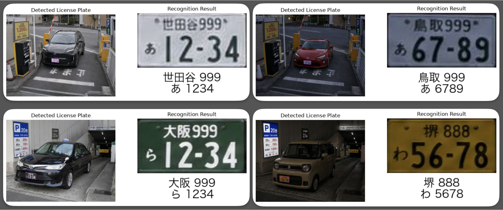

日本のプレートに特化
地名、分類番号、かな、一連指定番号を項目ごとに構造化。一般OCRの後処理を減らします。
Open source / MIT license
検出、台形補正、OCRまでをひとつのAPIに。Lipla-jpは、日本の自動車ナンバープレートに特化した軽量な認識ライブラリです。
import lipla
rec = lipla.Recognizer()
results = rec("car.jpg")
# → 品川 300 あ 12-3401 / FEATURES
複雑な前処理を意識せず、画像を渡すだけ。検出結果は扱いやすいPythonオブジェクトで返ります。
地名、分類番号、かな、一連指定番号を項目ごとに構造化。一般OCRの後処理を減らします。
4頂点を検出して射影補正。斜めから撮影したナンバープレートも読み取りやすい形に整えます。
PyTorchに依存せず、ONNX Runtimeで推論。CPUから各種実行プロバイダーまで選択できます。
02 / QUICK START
初回実行時のみ、Hugging Faceからモデルウェイトを自動でダウンロードします。
pip install git+https://github.com/ikeboo/Lipla-jp.gitimport lipla
recognizer = lipla.Recognizer()
results = recognizer("car.jpg")result = results[0]
print(result.area) # 品川
print(result.class_number) # 300
print(result.kana) # あ
print(result.number) # 123403 / SAMPLE
結果は構造化データだけでなく、わかりやすく視覚化された画像としても取得可能です。

RESULT / 01
世田谷 999
あ 12-34
{
"area": "世田谷",
"class_number": "999",
"kana": "あ",
"number": 1234,
"score": 0.987
}04 / API REFERENCE
公開インターフェースは Recognizer と Result。まずはこの2つだけで使い始められます。
CLASS
ナンバープレートの検出・補正・OCRを行うメインクラス。引数なしで既定モデルを利用できます。
Recognizer(pose_model_path=None, ocr_det_model_path=None, ocr_rec_model_path=None, *, det_thresh=0.7, ...)| パラメータ | 型 / 既定値 | 説明 |
|---|---|---|
*_model_path | str | Path | None | 各ONNXモデルのパス。未指定時は自動取得 |
det_thresh | float = 0.7 | プレート検出の信頼度しきい値 |
providers | list[str] | None | ONNX Runtimeの実行プロバイダー |
cache_dir | str | Path | None | モデルのキャッシュ先 |
local_files_only | bool = False | ローカルキャッシュだけを使用 |
recognizer(image)→list[Result]DATA CLASS
1枚のプレートについて、認識文字・信頼度・各種画像を保持する結果オブジェクトです。
area地域名strclass_number分類番号strkana用途のかなstrnumber一連指定番号intscore検出信頼度floatverticesプレート4頂点ndarrayplate_image補正済み画像ndarrayoriginal_image入力元画像ndarray各文字フィールドには area_score、class_number_score、kana_score、number_score もあります。
PROPERTIES & METHOD
result.det_image検出位置を囲んだ入力画像を返します。
ndarrayresult.result_image補正済みプレートと認識文字の画像を返します。
ndarrayresult.visualize()検出画像と認識結果をMatplotlibで並べて表示します。
None05 / FAQ
はい。MITライセンスで公開されており、ライセンス条件の範囲で商用利用、改変、再配布が可能です。
CPU環境でも利用できます。またWebGPUにも対応しており内蔵GPUでもより高速な推論が可能です。
画像ファイルのパス、またはOpenCVのBGR画像を入力できます。プレート幅が画像幅の1/10〜1/4、100ピクセル以上の画像を推奨します。
READY TO RECOGNIZE?